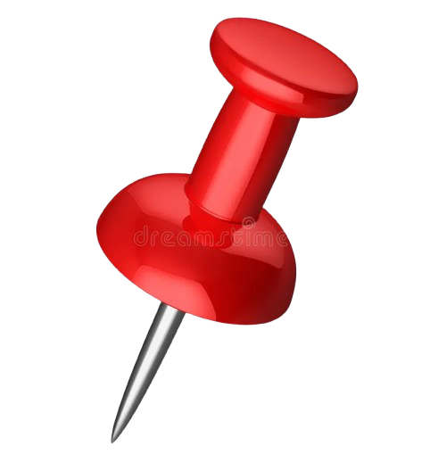
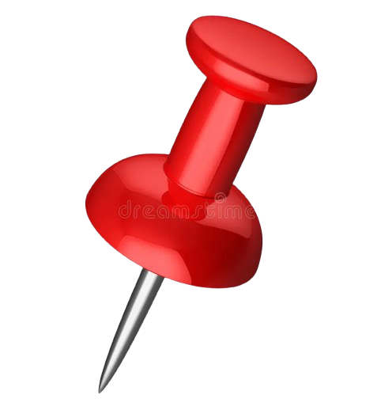

Gaël Musquet – L’humanitaire à travers la donnée
Gaël Musquet – L’humanitaire à travers la donnée
Météorologue de formation et hacker citoyen, Gaël Musquet place la technologie au service de l’humain. À travers des initiatives comme HAND et OpenStreetMap, il mobilise la cartographie et les données libres pour sauver des vies et redonner du pouvoir aux citoyens.
Son engagement illustre une conviction simple : la technologie n’a de sens que si elle renforce la solidarité et la résilience collective.